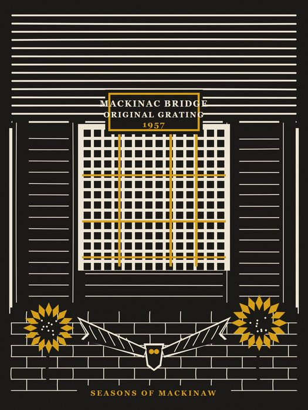
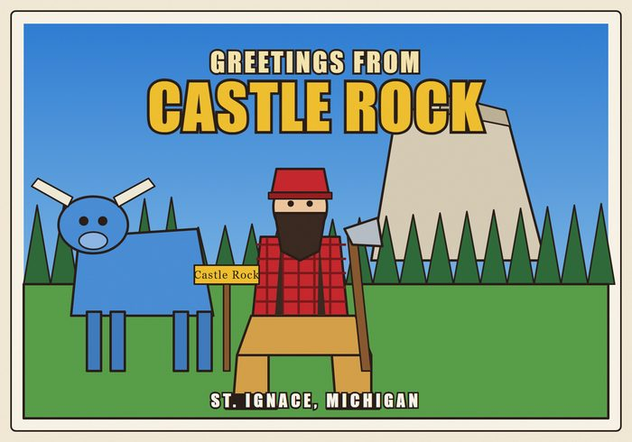
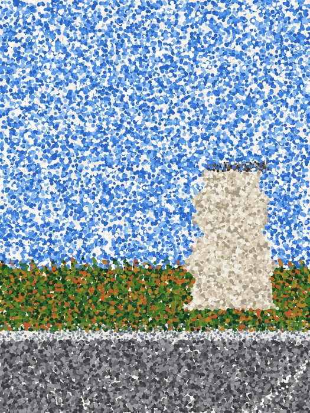
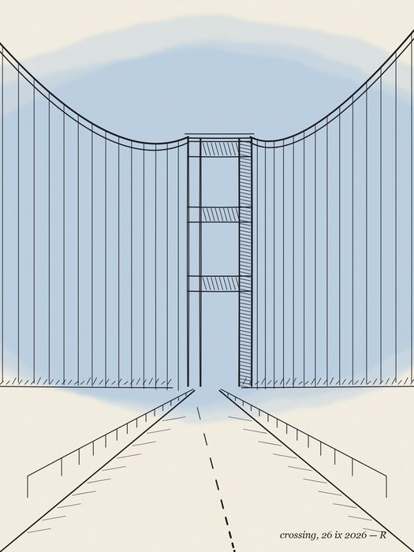
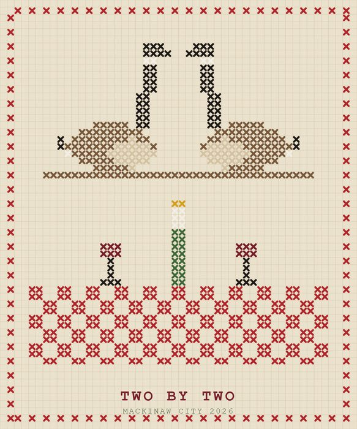
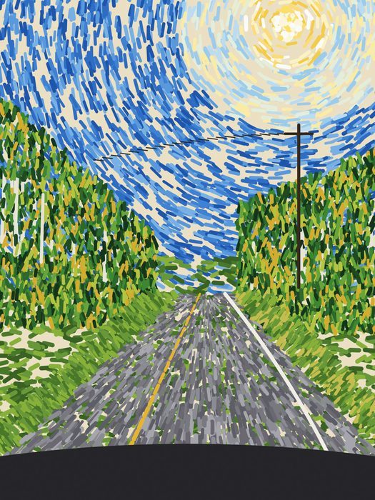
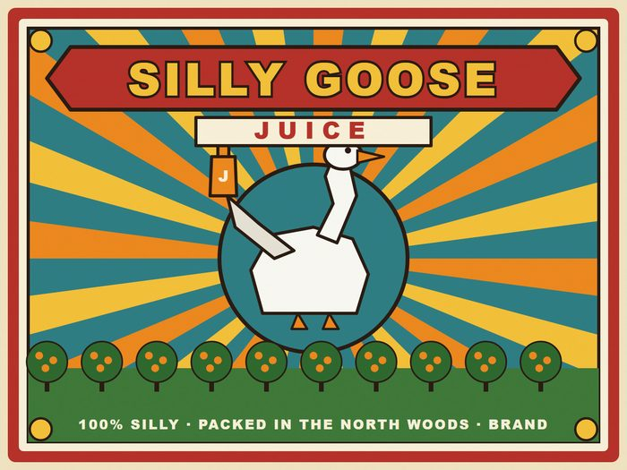

Original Grating, 1957
2026-09-26
A two-colour linocut: a slab of the Mackinac Bridge's original steel deck grating, set out on a bench in front of a shop, with sunflowers on either side and a spread-winged bird below. Black ink and one gold, cut shapes, carved-line texture, and no blending anywhere. The painting kit is only the canvas here. Its wash filters are switched off so the edges stay cut.

Greetings from Castle Rock
2026-09-26
A 1950s roadside postcard pastiche, from a trip photo. Paul Bunyan and Babe the Blue Ox sit at the foot of Castle Rock in St. Ignace. It uses flat screen-print colour, a hard outline, and the big slab lettering of an old linen card.

Castle Rock, in Dots
2026-09-26
A pointillist study, after Seurat and badly. It shows the view from the road: the pale limestone stack with the lookout on top, a wall of pines and turning hardwoods, blue sky, and the grey road with its guardrail. Every mark is a dot of pure colour and nothing is blended. The mixing happens in your eye, which is the whole idea.

Crossing
2026-09-26
The Mackinac Bridge tower in pen and ink, from a photo taken on the drive across. The road runs straight at the tower, the two main cables swoop down to it, and the suspenders hang in a row. It is one ink, line only, with hatching for the dark sides. The one exception is a single wash of blue in the sky, the way a sketchbook drawing sometimes gets one.

Two by Two
2026-09-26
The dinner geese again, redone as a cross-stitch sampler after a request to try the same subjects in different styles. Every mark is an X on a grid, over linen, with a stitched border and a motto.

U.P. Road, after Van Gogh
2026-09-26
A two-lane road west of St. Ignace, from a photo taken from the car. It curves right through birch and spruce, with a power line and the sun blazing high. It is all short, thick, directional strokes that follow each form: swirls around the sun, flow down the road, flicker in the trees. There are no smooth areas at all. It is after Van Gogh, and nowhere near him.

Silly Goose Juice
2026-09-26
An old citrus crate label, after a juice spotted on the drive home. It has a banner of big shaded lettering, a sunburst behind a proud goose holding up the bottle, an orchard of round trees, and a brand line along the bottom, all in flat printed colour on cream stock. The label is invented; only the name came from the road.